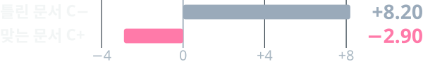
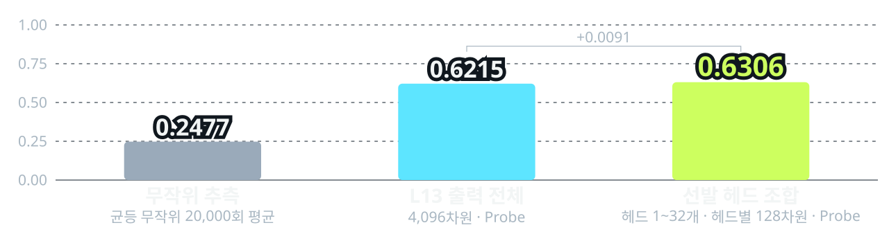
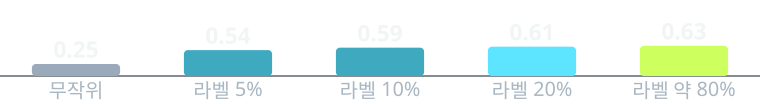
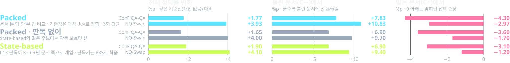

K+C+
둘 다 맞음
어느 쪽을 따라도 정답
362입력LLM 내부 신호로 지식–문맥 4-state를 읽고, 상태에 맞는 선택적 개입을 고르는 연구
K = 모델이 기억한 답 · C = 검색 결과처럼 질문과 함께 받은 문서. 어느 쪽이 맞는지는 입력마다 다르고, 모델은 미리 알지 못한다.
굵은 테두리 두 칸이 주요 목표 상태다. 틀린 쪽을 따르면 맞힐 수 있던 답도 틀린다. 입력 수는 자체 실험셋 P8S 기준, 예시는 설명용 가상 입력.
Always Steering: 모든 입력의 중간 계산값을 같은 방향으로 민다 · ConFiQA-QA 1,000질문(결과 ②) · 정답률 변화 %p

그래서 입력마다 상태를 읽고, 개입을 골라야 한다.
| 접근 | K·C 상태 판독 | 한계 |
|---|---|---|
| 문맥 충실 디코딩 | 구분하지 않음 | 틀린 문서를 따라간다 |
| Always Steering | 없음 | 맞는 문서의 답이 준다 |
| 이 연구 (제안) 4-state Routing | Probe 판독(결과 ①) | 통합 검증 진행 중 |
K+C−에서는 기억을, K−C+에서는 문서를 따르도록 상태별로 개입 방향을 고른다.
L13 헤드 신호를 읽어 L14–18에 반영하는 One-pass 구조. 가중치는 고정하고 작은 Probe와 Router만 학습한다.
판독은 4-state Macro-F1, 답변은 정답률(EM) 변화로 보고하고, C+ 손상을 함께 적는다.
기대 효과틀린 문서에 흔들리는 답은 줄이고, 맞는 문서로 답하던 능력은 지킨다.
제안 구조. L13 헤드 신호로 네 상태를 읽고 이어지는 레이어에서 상태에 맞는 개입을 고른다. 판독(①)과 개입 선택(②)을 각각 검증했고, 둘을 K−C+ 한 상태로 이은 State-based는 ②에 있다. 네 상태 통합은 다음 단계다.
L13 출력 전체와 판독 성능은 비슷하지만(0.6215 → 0.6306), 헤드 단위로 읽으면 어떤 헤드가 문서 정오·충돌 정보를 담는지 알 수 있다.
| LLM 가중치 | 고정 |
| Probe | 선형 분류기 · 정답 상태로 학습 |
| Router | 이득 예측기 · 학습 분할의 정답으로 학습 |
| Packed | 방향은 라벨 없이 갱신 · 기준값은 대상 dev로 정함 |
선발 헤드 조합의 Probe는 네 상태를 Macro-F1 0.6306으로 구분한다(무작위 0.2477). Macro-F1은 네 상태를 고르게 맞히는 정도를 보는 0~1 점수로, 정답률이 아니다.
4-state Macro-F1 · 자체 실험셋 P8S 612질문 × 문서 2종 = 1,224입력
Llama-3.1-8B-Instruct · 질문 단위 5분할 교차검증 · 학습에 안 쓴 질문의 예측만 모아 계산 · 같은 질문의 두 문서는 같은 분할

20%는 질문 122개로 학습해 나머지 490질문으로 평가(5회 평균), 약 80%는 질문 단위 5분할 교차검증 평균 · 평가 집합은 다름

상태별 입력 수가 250~362개로 달라 네 상태를 같은 비중으로 보는 Macro-F1을 쓴다(같은 평가의 4-state 정확도 0.6422). Probe 없이 헤드 신호에 고정 기준만 둔 규칙은 0.3860에 그쳐, 판독에는 학습한 Probe가 필요하다. 답변 정답률은 결과 ②에서 따로 본다.
ConFiQA-QA 1,000질문 / NQ-Swap 1,000문항, 각 2,000입력 · Llama-3.1-8B-Instruct · 모든 방법을 같은 채점기(원래 사실 정답 EM)로 다시 채점 · 개입 전 53.80% / 48.70% · 기준값은 각 실험의 원래 값 고정

| State-based − 비교 대상, %p · 회색 95% 신뢰구간 | 맞는 문서 C+ | 틀린 문서 C− | 전체 | |
|---|---|---|---|---|
| Packed 대비 | ConFiQA-QA | +1.200.23~2.20 | −0.93−1.97~0.13 | +0.13−0.58~0.85 |
| NQ-Swap | +1.770.64~2.99 | −1.43−2.70~−0.23 | +0.17−0.67~1.05 | |
| 판독 없는 Packed 대비 | ConFiQA-QA | +0.500.10~1.00 | 0.000.00~0.00 | +0.250.05~0.50 |
| NQ-Swap | +0.500.10~0.98 | −0.30−0.70~0.00 | +0.10−0.10~0.35 | |
| 개입 전 대비 %p | 전체 | 틀린 문서 C− | 맞는 문서 C+ |
|---|---|---|---|
| Always | +2.65 | +8.20 | −2.90 |
| Router | +3.80 | +6.80 | +0.80하한 −0.60 |
문서→질문 순서 프롬프트로 개입 전이 51.65%라 위와 섞지 않는다. Router는 학습 분할 정답으로 학습, Always 대비 +1.15(0.10~2.20), C+ 하한이 허용선 −2 안(비열등).
판독을 붙이면 Packed의 C+ 손상이 줄지만(State-based), 개입 전 수준에는 못 미친다.
수치 출처 · 중간발표 자료(자체 실험셋 P8S 판독 실험) · 같은 데이터 재평가(2026.11.09) · Always·Router 외부 평가 보고(2026.10)